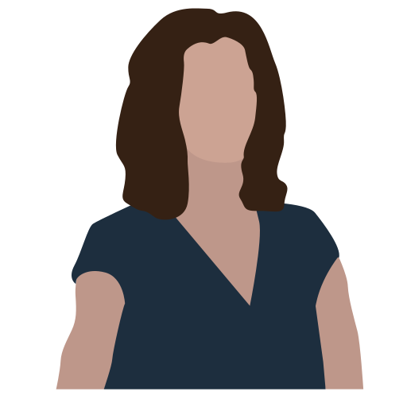

Sobre nosotros
PinBoard es un espacio donde subes imágenes, las ordenas por categorías y descubres lo que otras personas comparten. Todo en un solo lugar.
Qué puedes hacer en PinBoard
-
Explorar
Recorre los pines de la comunidad y filtra por categoría.
-
Crear pines
Sube una imagen, ponle título, descripción y categorías.
-
Dar like
Haz clic sobre el corazón de un pin para marcarlo como favorito.
-
Guardar y seguir
Guarda los pines que te gustan y sigue a sus creadores.
Cómo empezar
- Sube tu primera imagen. Entra a Add y elige el archivo; verás una vista previa antes de publicar.
- Elige sus categorías. Así otras personas la encontrarán en Explore.
- Mira lo que pasa con tus pines. En Dashboard encuentras todo lo que has creado y guardado.
Creadores de PinBoard
-

Valeria Estrada Cabañas
25110124
-
Héctor Joshua Castañeda Andrade
25110125
-
Joshua Alejandro Romo Cuarennta
25110130